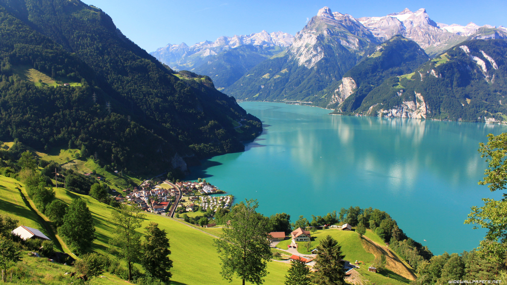

Switzerland
a breathtaking blend of snow-capped Alps, pristine lakes, and charming villages
What makes me want to visit
One of my favorite childhood memories was sitting by the window during long road trips, watching the world pass by, completely lost in my thoughts. I loved seeing open fields, winding roads, and distant hills, wondering what it would be like to go even farther to a place where nature was at its most stunning. Switzerland feels like the ultimate version of that dream, a place where I could just get lost in the beauty of the world, away from the noise and distractions of everyday life. I remember watching travel documentaries with my family, mesmerized by the breathtaking views of the Swiss Alps, imagining what it would be like to stand there, surrounded by nothing but mountains and sky.
Sceneries in Switzerland
Travel Information
How to Get There
- Flying: The most convenient way is to take a flight from Manila to Zurich or Geneva. Travel time is approximately 16-18 hours, including layovers.
- Train: Once in Europe, you can take scenic train rides to Switzerland from neighboring countries like France, Germany, or Italy.
Best Time to Visit
- April to June: Spring season with blooming flowers and mild weather, perfect for sightseeing.
- July to August: Summer season with warm weather, ideal for hiking and outdoor activities.
- December to February: Winter season for skiing, snowboarding, and enjoying the magical snow-covered landscapes.